4.3 - The Equation of a Line
In the last lesson, you learned how to find and use the slope of a line. Now you’ll see how slope connects to a line’s equation, and how one special point called the y-intercept helps you write that equation quickly.
Lines are everywhere. We see them on roads, ramps, graphs of data, the list goes on and on. Every straight line can be described with just two numbers: its slope and its y-intercept. Once you know those, you can write an equation, make predictions, and see how the line behaves, all without having to graph every single point.
Printable Guided Notes for this lesson — fill-in notes to print and write on.
🔥 Warm Up
Graph the line \(y = 3x + 2\) using \(x = 1\) and \(x = -1\).
Find the slope of the line passing through \((3, 5)\) and \((-5, -3)\).
What is the \(x\)-value when a line crosses the y-axis? What is the \(y\)-value when a line crosses the x-axis?
👥 Learn Together
4.3.1 - Graphing a Line Using a Point and the Slope
A line’s slope is constant, it never changes, no matter which points you use. That means if you know one point and the slope, you can find as many other points as you want.
Example 1: Graph from a point and slope
Graph the line with slope \(m = \tfrac{1}{3}\) passing through the point \((0, 1)\).
The slope means “up 1 for every 3 to the right.” Starting at \((0, 1)\), move right 3 and up 1 to reach \((3, 2)\).
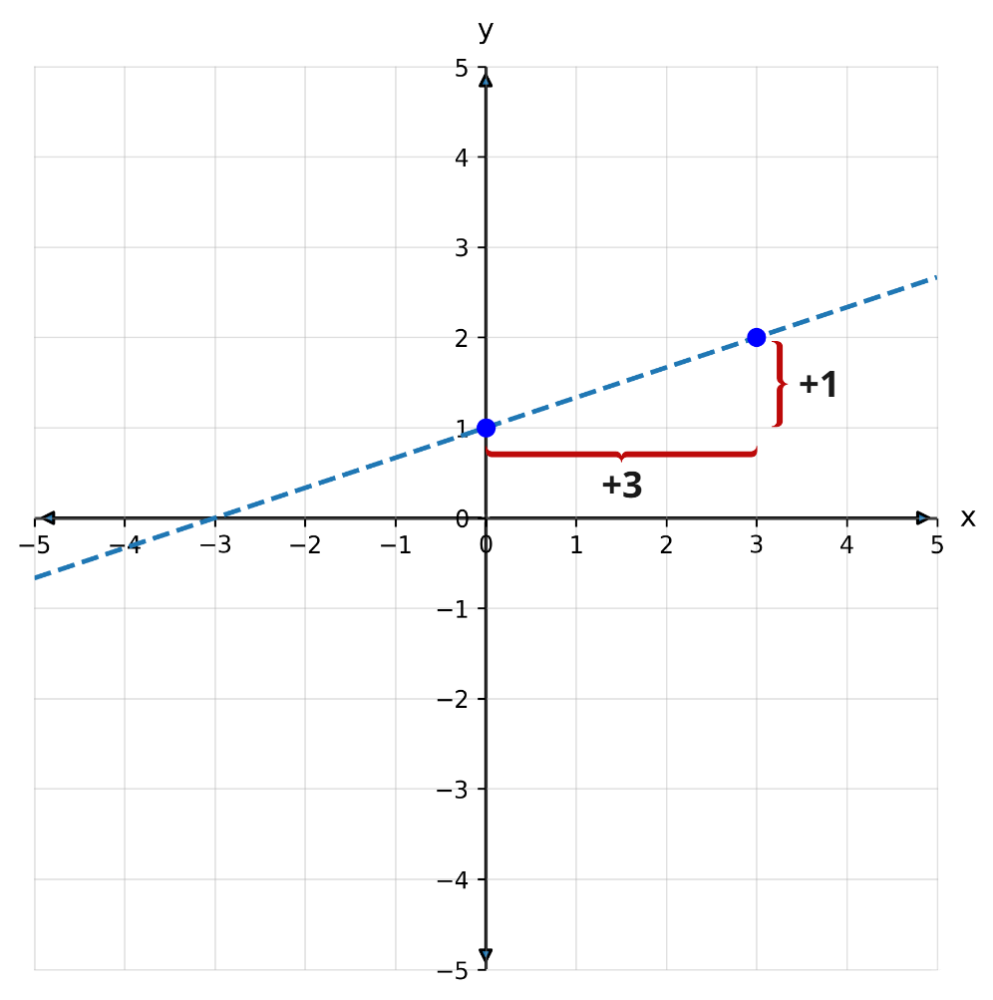
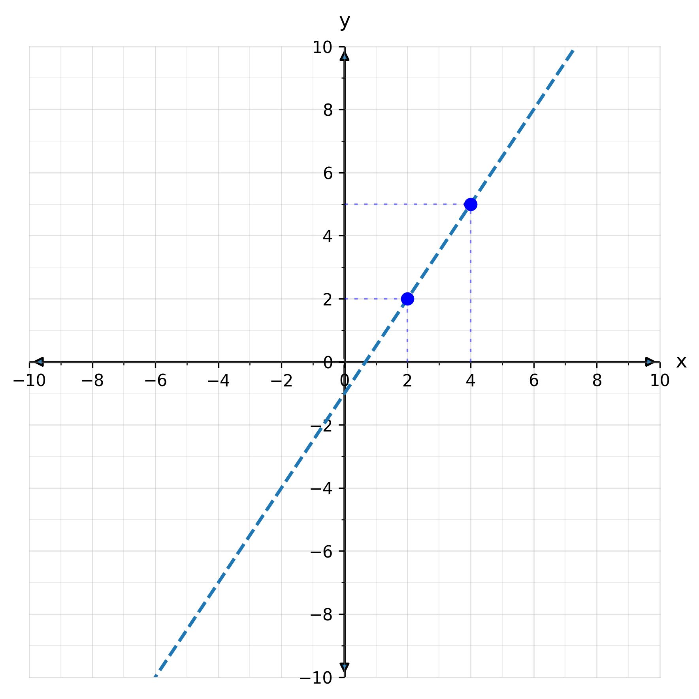
4.3.2 - Discovering Intercepts
Every line crosses the axes somewhere. Those crossing points are special because they’re easy to find, and they tell us a lot about the line.
Example 2: Where does it cross?
Graph \(y = \tfrac{3}{4}x - 3\). Then find where it crosses each axis.
Let’s use \(x = 8\) and \(x = -4\).
| \(x\) | \(y\) |
|---|---|
| \(8\) | \(3\) |
| \(-4\) | \(-6\) |
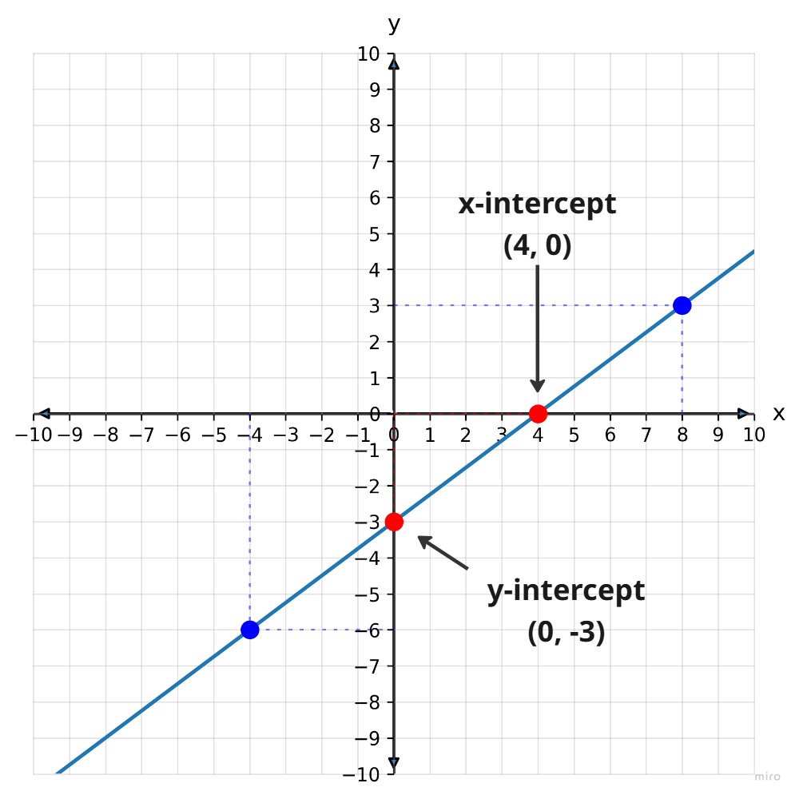
You can see two important points:
- It crosses the y-axis at \((0, -3)\).
- It crosses the x-axis at \((4, 0)\).
Those are called intercepts.
The x-intercept is where the line crosses the x-axis → it always has the form \((x, 0)\). The y-intercept is where the line crosses the y-axis → it always has the form \((0, y)\).
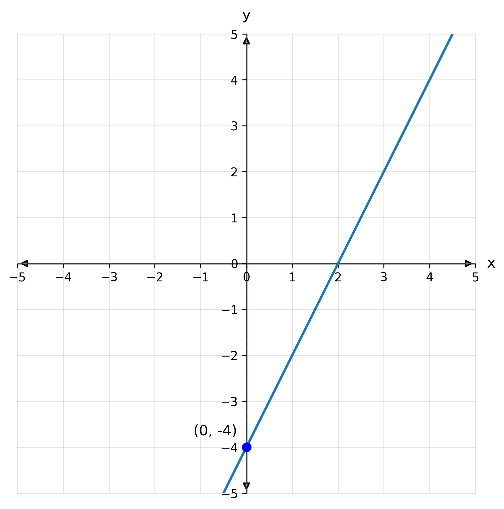
4.3.3 - Finding Intercepts Algebraically
You don’t always need a graph. Because we know what the intercepts look like, we can set one variable to 0 and solve for the other.
Example 3: Find the intercepts
Find the x- and y-intercepts of \(y = x - 5\).
x-intercept: set \(y = 0\)
\[ \begin{aligned} 0 &= x - 5\\ x &= 5 \end{aligned} \]
So the x-intercept is \((5, 0)\).
y-intercept: set \(x = 0\)
\[ y = 0 - 5 = -5 \]
So the y-intercept is \((0, -5)\).
x-intercept: \[ \begin{aligned} 0 &= 2x + 1\\ x &= -\tfrac{1}{2} \end{aligned} \] \((-\tfrac{1}{2}, 0)\)
y-intercept: \[ y = 2(0) + 1 = 1 \] \((0, 1)\)
To find intercepts:
- set \(y=0\) → get the x-intercept
- set \(x=0\) → get the y-intercept
4.3.4 - The Equation of a Line
Now we can tie everything together.
Every non-vertical line can be written as
\[ y = mx + b \]
where
- \(m\) is the slope, and
- \(b\) is the y-intercept: the point where the line crosses the y-axis.
This is called the slope-intercept form of a line.
Example 4: Graph from an equation
Graph \(y = \tfrac{2}{3}x - 2\).
Start at the y-intercept \((0, -2)\). Then use the slope \(m = \tfrac{2}{3}\) → up 2, right 3.
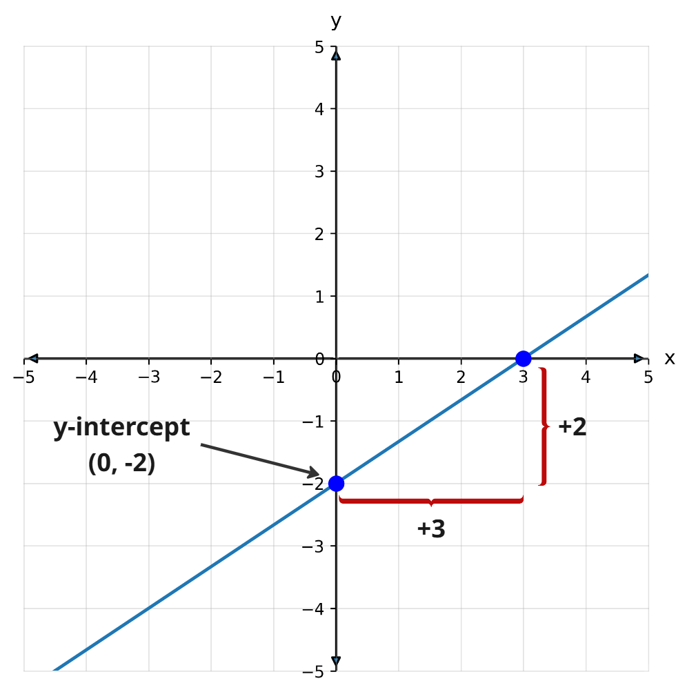
Example 5: Integer slope
Graph \(y = -4x + 3\).
Start at the y-intercept \((0, 3)\). The slope is \(-4\), which means “down 4 for every 1 to the right.”
Writing it as a fraction helps visualize the rise and run:
\[ m = -4 = -\tfrac{4}{1} \]
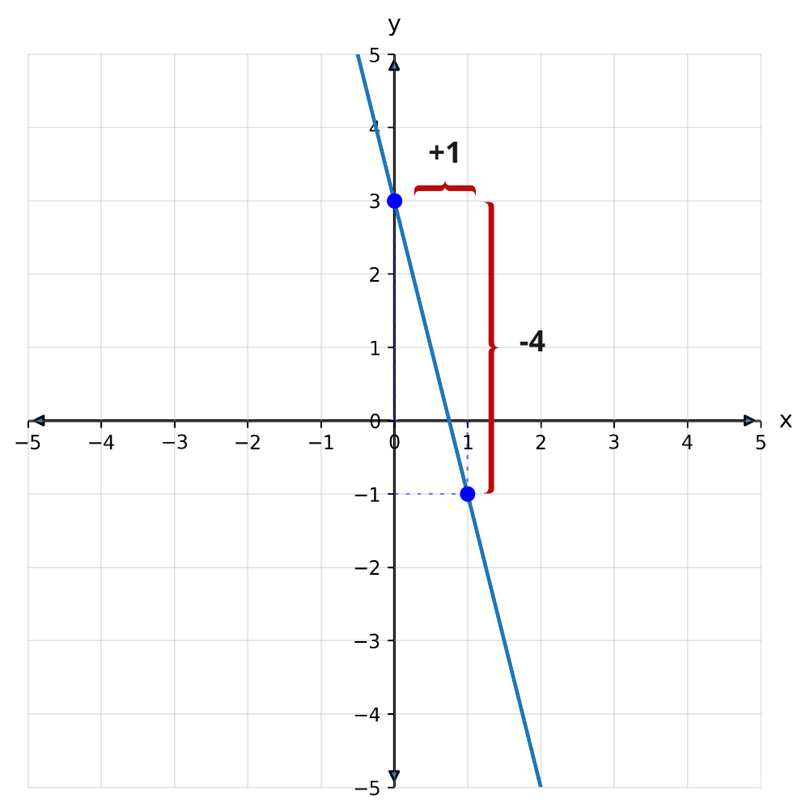
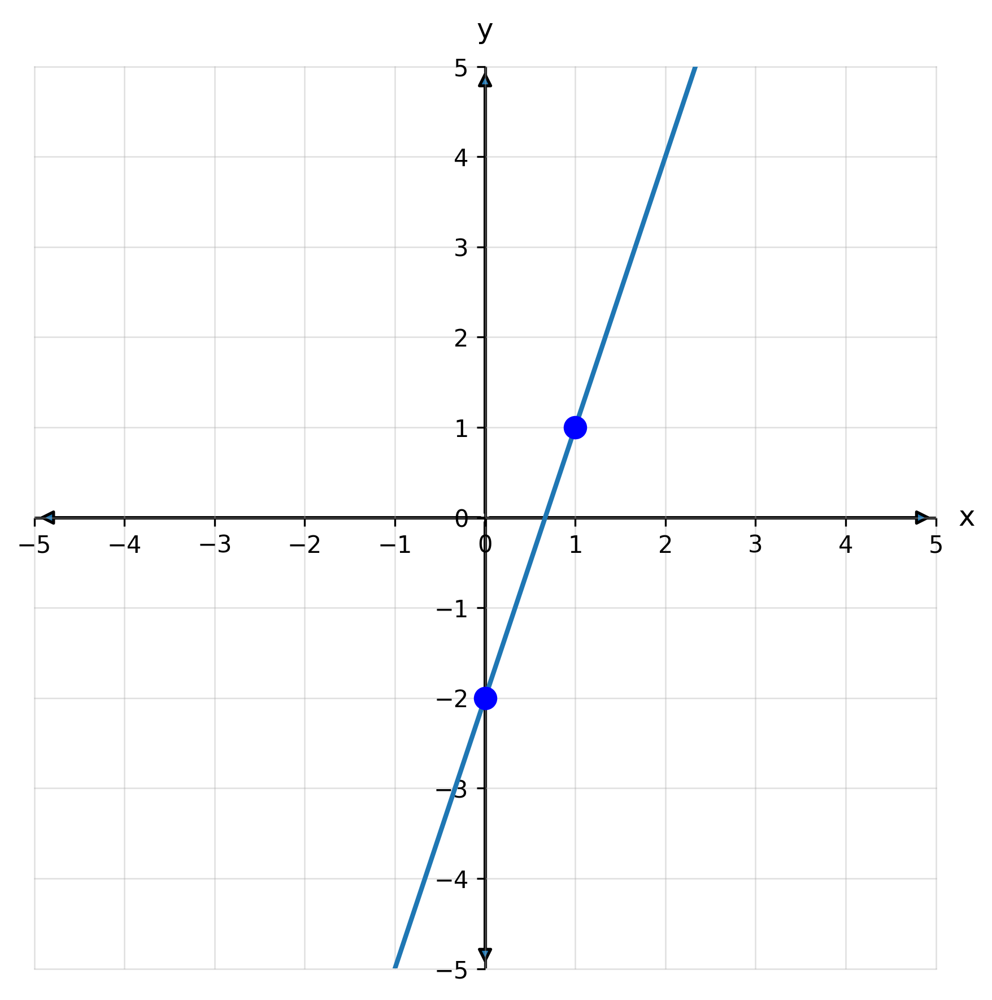
▶️ Interactive Learning
The best way to learn math is by playing around with it.
Give the Slope-Intercept Form Investigation tool a try. It will help you better understand how \(y=mx+b\) works!
If you are interested in a gamified way to learn about lines, try out the Line Matching Game
✍️ Practice On Your Own
Graph from Slope or a Point
Graph the line with slope \(m = 2\) passing through \((0, 0)\).
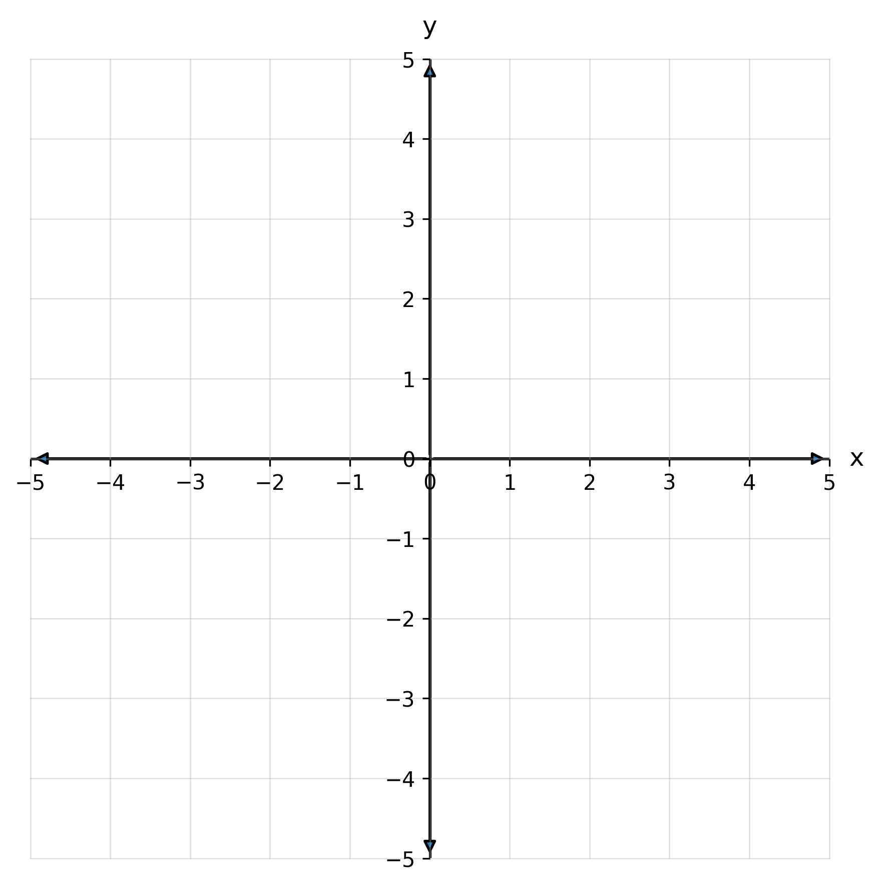
Graph the line with slope \(m = -1\) passing through \((0, 3)\).
Graph the line \(y = \tfrac{1}{2}x - 1\). Label the slope and y-intercept.
Graph the line \(y = -3x + 2\).
Graph the line with slope \(m = \tfrac{2}{3}\) passing through \((0, 4)\).

Find Intercepts
Find the x- and y-intercepts of \(y = 3x - 6\).
Find the x- and y-intercepts of \(y = -2x + 8\).
Find the intercepts of \(2x + 3y = 12\) (Hint: solve for y first).
Interpret and Compare Lines
In \(y = 2x + 4\), what is the slope and what does it tell you about the direction of the line?
In \(y = -\tfrac{1}{2}x + 3\), how does the slope compare to a line with \(m = 2\)?
Compare \(y = 3x + 1\) and \(y = 3x - 4\).
- How are they alike?
- How are they different?
Compare \(y = 2x\) and \(y = -2x\).
- How does the sign of the slope affect each line?
Which is steeper: \(y = \tfrac{1}{2}x + 1\) or \(y = 4x - 3\)? Explain how you know.
Challenge Problems
Two lines are perpendicular (\(\perp\)) when their slopes multiply to \(-1\). For example, if one line has slope \(m\), then the perpendicular line has slope \(m_\perp = -\tfrac{1}{m}\).
The line \(y = 3x - 1\) has slope \(3\). A second line is perpendicular to it and crosses the y-axis at \((0, 9)\).
Find the point where the two lines intersect.
Parallel lines have the same slope. Find the y-intercept of a line that passes through the point \((n, m)\) and is parallel to the line through the points \((m, 3)\) and \((4, n)\).
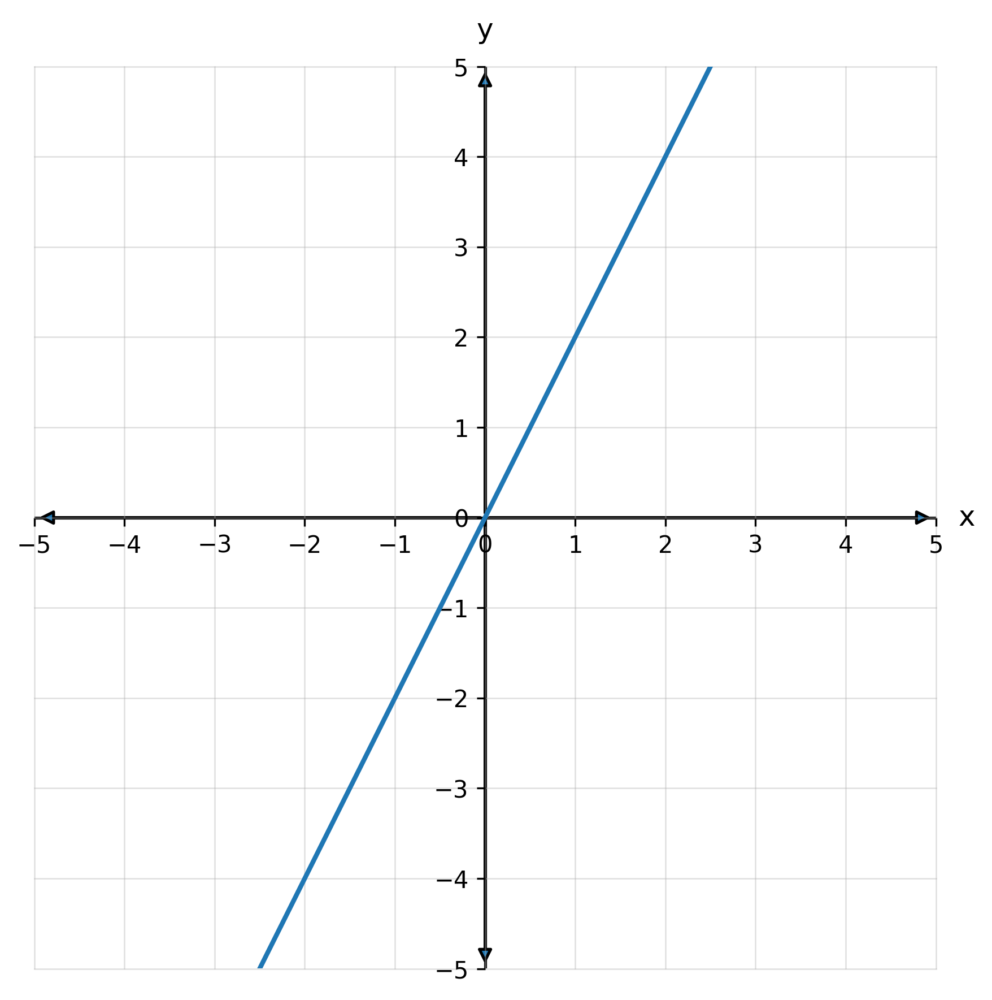
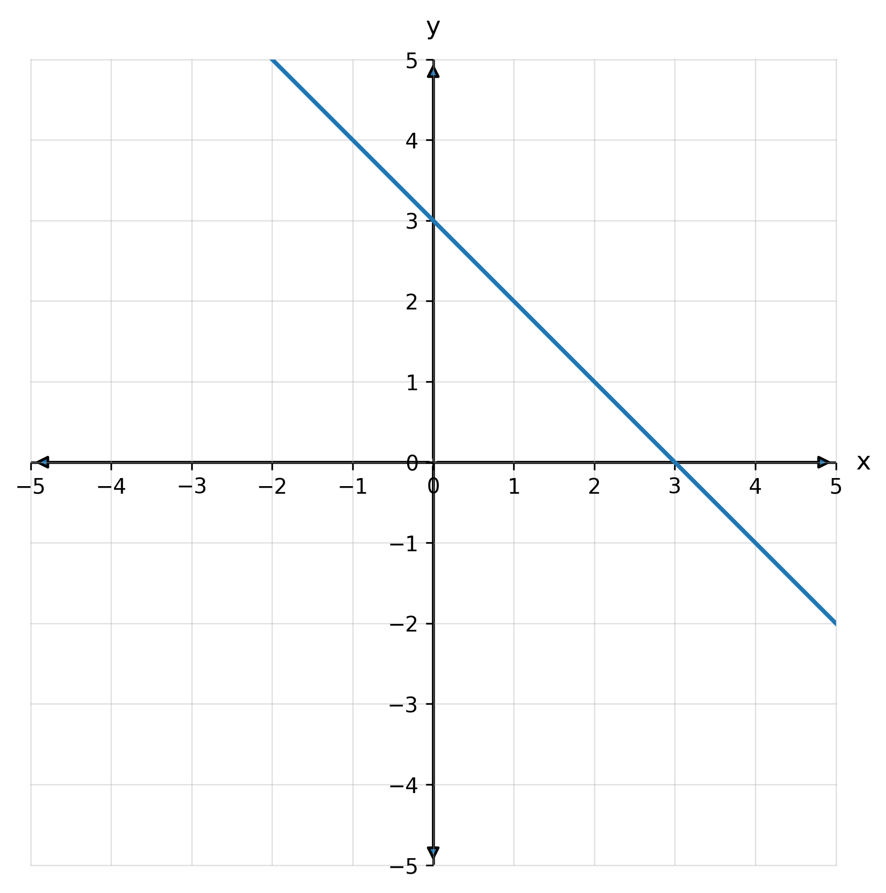
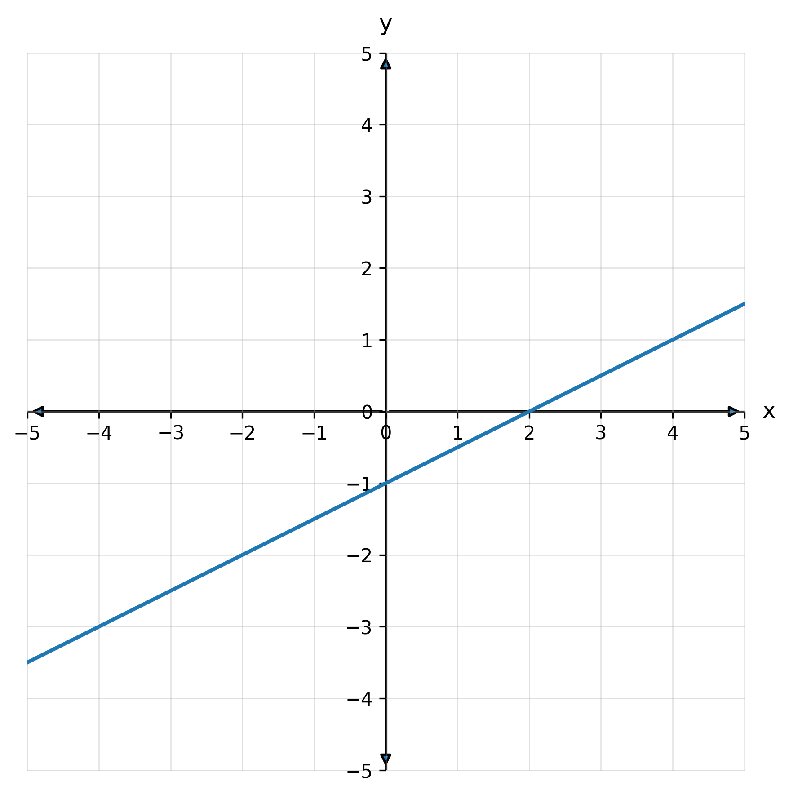
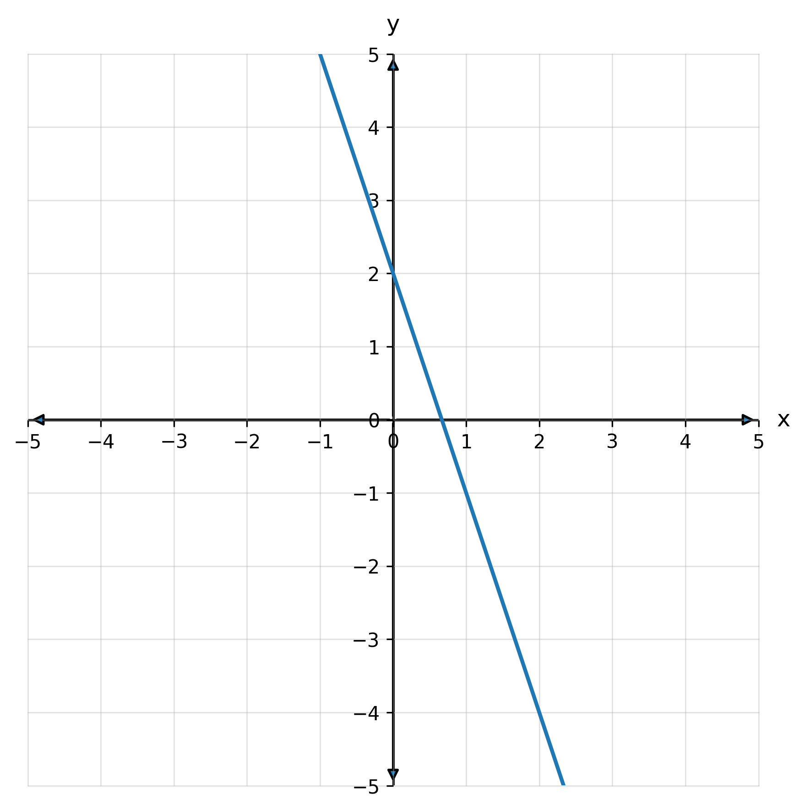
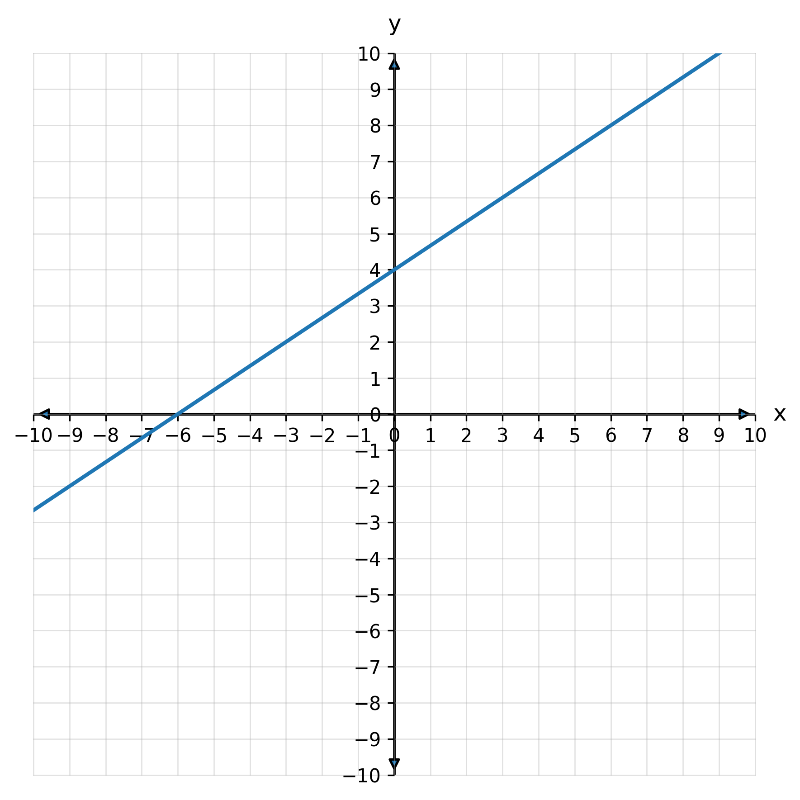
y-intercept: (0, -6) x-intercept: (2, 0)
y-intercept: (0, 8) x-intercept: (-4, 0)
y-intercept: (0, 4) x-intercept: (6, 0)
The slope is 2. The line moves up 2 for every 1 step to the right.
A slope of \(-\tfrac{1}{2}\) moves down 1 for every 2 steps to the right. A slope of \(2\) moves up 2 for every 1 step to the right.
They have the same slope but different y-intercepts.
The line \(y=2x\) moves up and to the right. Whereas the line \(y=-2x\) moves down and to the right.
\(y = 4x - 3\) is steeper because you move up 4 for every step to the right (or 8 for every two steps right). The line \(y = \tfrac{1}{2}x + 1\) only moves up 1 for every 2 steps to the right.